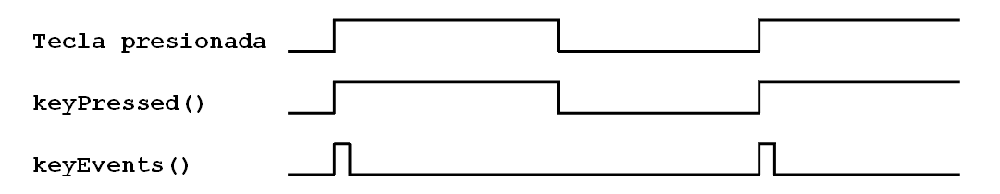

6. Botons i esdeveniments¶

Els pendents¶
- Llegiu els esdeveniments associats a un botó.
- Programa Arduino per respondre als esdeveniments del botó.
Esdeveniments relacionats amb la factura¶
{kind=link}

La funció: cpp: func: `keyales '¶
-
int
keyEvents(int keyNum, int event)¶ Aquesta funció retorna el valor dels esdeveniments que es produeixen en un botó. Els esdeveniments que la funció pot retornar són els següents
Aconteixement Significat Key_pressed_time1 El botó ha estat premsat durant 0,02 segons Key_pressed_time2 El botó ha estat premsat durant 0,5 segons Key_Pressed_Time3 El botó s'ha premut durant 2,0 segons Key_releed El botó ha deixat de prémer Aquests valors de temps són valors predefinits després d’iniciar la placa i es poden canviar a la configuració.
; Keynum |
Encendre un LED prement un botó un cert temps¶
En aquest exemple, un LED s'encendrà després que el botó es premeu més de mig segon
1 2 3 4 5 6 7 8 9 10 11 12 13 14 15 16 | // Enciende el led D1 cuando se presiona el pulsador 1
// más de medio segundo
#include <Wire.h>
#include <PC42.h>
void setup() {
pc.begin(); // Inicializar el módulo PC42
}
void loop() {
// Si (pulsador 1 es presionado-medio-segundo)
if (pc.keyEvents(1, KEY_PRESSED_TIME2))
// Enciende el led D1
pc.ledWrite(1, LED_ON);
}
|
L’exemple es pot modificar fàcilment perquè s’encengui després de prémer dos segons.
1 2 3 4 5 6 7 8 9 10 11 12 13 14 15 16 | // Enciende el led D1 cuando se presione el pulsador 1
// más de dos segundos
#include <Wire.h>
#include <PC42.h>
void setup() {
pc.begin(); // Inicializar el módulo PC42
}
void loop() {
// Si (pulsador 1 es presionado-dos-segundos)
if (pc.keyEvents(1, KEY_PRESSED_TIME3))
// Enciende el led D1
pc.ledWrite(1, LED_ON);
}
|
Múltiples funcions en un botó¶
Aquest exemple és una mica més complex i demostra la capacitat dels esdeveniments per donar més d’un significat a un sol botó. Gràcies a aquesta capacitat, un sol botó pot realitzar moltes funcions només.
1 2 3 4 5 6 7 8 9 10 11 12 13 14 15 16 17 18 19 20 21 22 23 24 25 26 27 28 | // Tres funciones en el pulsador 1:
// Al presionar poco tiempo, se enciende el led D1
// Al presionar más de medio segundo, parpadea el led D1
// Al presionar más de dos segundos, se apaga el led D1
#include <Wire.h>
#include <PC42.h>
void setup() {
pc.begin(); // Inicializar el módulo PC42
}
void loop() {
// Si (pulsador 1 es recién-presionado)
if (pc.keyEvents(1, KEY_PRESSED_TIME1))
// Enciende el led D1
pc.ledWrite(1, LED_ON);
// Si (pulsador 1 es presionado-medio-segundo)
if (pc.keyEvents(1, KEY_PRESSED_TIME2))
// Parpadea el led D1 rápido
pc.ledBlink(1, 200, 200);
// Si (pulsador 1 es presionado-dos-segundos)
if (pc.keyEvents(1, KEY_PRESSED_TIME3))
// Apaga el led D1
pc.ledWrite(1, LED_OFF);
}
|
Exercicis¶
Programa el codi necessari per resoldre els problemes següents.
El programa següent encén el LED D1 en prémer el botó D1 i apaga el LED D1 en prémer el botó de nou 1. S'utilitza una variable per emmagatzemar l'estat LED D1. Es demana que modifiqui el programa de manera que el LED D2 també s’encengui i s’apagui amb el botó 2.
1 2 3 4 5 6 7 8 9 10 11 12 13 14 15 16 17 18 19 20 21
// Enciende y apaga el led D1 con el pulsador 1 #include <Wire.h> #include <PC42.h> int on_off_1; void setup() { pc.begin(); // Inicializar el módulo PC42 on_off_1 = 0; // El led D1 comienza apagado } void loop() { pc.ledWrite(1, on_off_1); // Enciende o apaga el led D1 // Si (evento de pulsador 1 es igual a pulsado) if (pc.keyEvents(1, KEY_PRESSED_TIME1)) { // Cambia el estado de encendido <--> apagado on_off_1 = 1 - on_off_1; } }
El programa següent mou un LED a la dreta quan es prem el botó. Modifiqueu el programa de manera que el LED es mogui a l'esquerra prement el botó 1.
1 2 3 4 5 6 7 8 9 10 11 12 13 14 15 16 17 18 19 20 21 22 23 24 25
// Mueve la luz a la derecha al presionar el pulsador 2 #include <Wire.h> #include <PC42.h> int led; void setup() { pc.begin(); // Inicializar el módulo PC42 led = 1; // Enciende primero el led D1 } void loop() { // Enciende el led actual pc.ledWrite(led, LED_ON); // Si se presiona la tecla derecha if (pc.keyEvents(KEY_RIGHT, KEY_PRESSED_TIME1)) { pc.ledWrite(led, LED_OFF); // Apaga el led actual led = led + 1; // Mover el led a la derecha if (led > 6) // Si se pasa por la derecha led = 1; // volver al inicio } }
Modifiqueu el programa anterior per activar el LED D1 i desactiveu la resta de LEDS prement el botó 6 `` key_back`` durant dos segons.